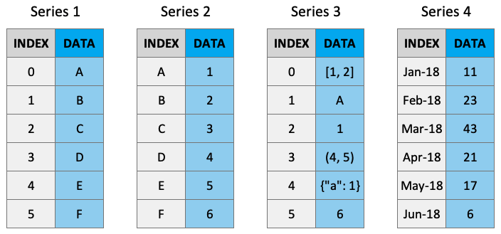
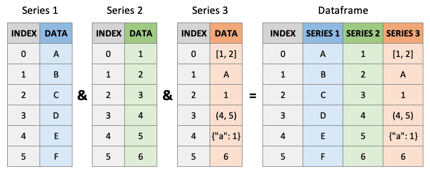

import pandas as pd
df = pd.read_csv('../data/airlines.csv')
df.head()| carrier | name | |
|---|---|---|
| 0 | 9E | Endeavor Air Inc. |
| 1 | AA | American Airlines Inc. |
| 2 | AS | Alaska Airlines Inc. |
| 3 | B6 | JetBlue Airways |
| 4 | DL | Delta Air Lines Inc. |
Imagine you’ve just imported a new airline dataset into Python. It includes hundreds of rows listing airline names and their carrier codes. Your manager asks, “Can you quickly pull a list of all airline names? And which carrier code has the longest name?” Before you can answer, you need to understand what’s inside that DataFrame.
In the previous chapter, we focused on how to import datasets into Python using Pandas — a crucial first step in any data analysis workflow. Now that we can get data into Python, we need to understand what we’re actually working with. This chapter takes a closer look at Pandas DataFrames and their building blocks, the Series.
By deepening your understanding of the DataFrame structure and how to access and manipulate data within it, you’ll build a foundation for future chapters focused on cleaning, transforming, and analyzing real-world data.
At the end of this lesson you should be able to:
As you read through this chapter, we encourage you to follow along using the companion notebook in Google Colab (or other editor of choice). This interactive notebook lets you run code examples covered in the chapter—and experiment with your own ideas.
üëâ Open the Dataframes Notebook in Colab.
To illustrate our points throughout this lesson, we’ll use the following airlines data which includes the name of the airline carrier and the airline carrier code:
import pandas as pd
df = pd.read_csv('../data/airlines.csv')
df.head()| carrier | name | |
|---|---|---|
| 0 | 9E | Endeavor Air Inc. |
| 1 | AA | American Airlines Inc. |
| 2 | AS | Alaska Airlines Inc. |
| 3 | B6 | JetBlue Airways |
| 4 | DL | Delta Air Lines Inc. |
A DataFrame is a two-dimensional, labeled data structure—similar to a table in Excel or a SQL database—that is used to store and manipulate structured data. You can think of it as a spreadsheet-like object where the data is organized into rows and columns.
Each column in a DataFrame is actually a special type of object in Pandas called a Series. A Series is a one-dimensional array-like object that holds data and a corresponding index for labeling each entry. While the concept of a Series might be new to you, it’s fundamental to how Pandas works under the hood. Understanding how Series operate is essential because much of your interaction with DataFrames involves accessing and manipulating individual Series.
df.info()
df.shape<class 'pandas.core.frame.DataFrame'>
RangeIndex: 16 entries, 0 to 15
Data columns (total 2 columns):
# Column Non-Null Count Dtype
--- ------ -------------- -----
0 carrier 16 non-null object
1 name 16 non-null object
dtypes: object(2)
memory usage: 388.0+ bytes(16, 2)Columns (and rows) of a DataFrame are actually Series objects. A Series is a one-dimensional labeled array capable of holding any data type — such as integers, strings, or even objects. You can think of it as a single column of data with a label on every entry. When you select a single column from a DataFrame, Pandas returns that column as a Series object.

You can extract a Series using bracket notation with the column name:
carrier_column = df['carrier']
carrier_column0 9E
1 AA
2 AS
3 B6
4 DL
5 EV
6 F9
7 FL
8 HA
9 MQ
10 OO
11 UA
12 US
13 VX
14 WN
15 YV
Name: carrier, dtype: objectThis looks very much like a column of data — and it is — but under the hood, it’s a different type of object than the full DataFrame:
type(carrier_column)pandas.core.series.SeriesThis confirms that what you extracted is a Series. You can verify its one-dimensional nature with:
carrier_column.shape # One dimension (just the number of rows)(16,)Compare this with the shape of the full DataFrame, which has both rows and columns:
df.shape # Two dimensions (rows, columns)(16, 2)It’s important to be familiar with Series because they are fundamentally the core of DataFrames.

Understanding this distinction is important, because many of the functions and behaviors available to Series differ from those of DataFrames. As we continue working with data, we’ll frequently switch between viewing data as Series and viewing it as part of a full DataFrame.
Interestingly, when you extract a single row using .loc[], Pandas also returns a Series. In that case, the index of the Series becomes the column names of the original DataFrame:
.loc[] is an accessor that allows us to retrieve rows and columns by labels. We’ll explore accessors more in the next chapter, but for now, just know we’re using it here to get the first row of the DataFrame.
first_row = df.loc[0] # Using .loc to access the first row of the DataFrame
type(first_row) # pandas.core.series.Seriespandas.core.series.SeriesThis reinforces the idea that both columns and rows, when isolated, are treated as Series.
Another difference lies in the methods available to each. Series come with some specialized methods, such as .to_list(), which converts the data to a basic Python list. This method is not available on DataFrames:
carrier_column.to_list() # works['9E',
'AA',
'AS',
'B6',
'DL',
'EV',
'F9',
'FL',
'HA',
'MQ',
'OO',
'UA',
'US',
'VX',
'WN',
'YV']# This will raise an error
df.to_list()--------------------------------------------------------------------------- AttributeError Traceback (most recent call last) /tmp/ipykernel_3158/1197199109.py in ?() 1 # This will raise an error ----> 2 df.to_list() /opt/hostedtoolcache/Python/3.12.12/x64/lib/python3.12/site-packages/pandas/core/generic.py in ?(self, name) 6314 and name not in self._accessors 6315 and self._info_axis._can_hold_identifiers_and_holds_name(name) 6316 ): 6317 return self[name] -> 6318 return object.__getattribute__(self, name) AttributeError: 'DataFrame' object has no attribute 'to_list'
As you continue through this book, you’ll learn many methods that apply specifically to either Series or DataFrames, and some that work on both. Becoming familiar with the structure of each will help you develop the intuition to choose and apply the right methods in the right context.
Finally, Series tend to print more compactly and are useful when you’re only interested in a single set of values — like a single variable or row. Their lightweight format makes them a convenient choice in many day-to-day data tasks.
First, let’s create our own Series object from scratch – they don’t always need to come from a DataFrame. Here, we pass a list in as an argument and it will be converted to a Series:
s = pd.Series([10, 20, 30, 40, 50])
s0 10
1 20
2 30
3 40
4 50
dtype: int64This gives us a one-dimensional structure that prints a little differently than a DataFrame. There are three main parts of the Series to pay attention to:
int64)Values are fairly self-explanatory — they’re the list elements we passed in. The data type describes what kind of values are being stored (numbers, strings, etc.). Series are often homogeneous — holding only one data type — though technically they can hold a mix (which we’ll avoid for clarity).
The index is where things get more interesting. Every Series has an index, which functions much like the keys in a dictionary — each label maps to a value. By default, Pandas assigns numeric labels starting at 0:
s.index # Default index (RangeIndex)
s0 10
1 20
2 30
3 40
4 50
dtype: int64But we can change the index to be more meaningful. For example, we could relabel the values using letters:
s.index = ['a', 'b', 'c', 'd', 'e']
sa 10
b 20
c 30
d 40
e 50
dtype: int64Now, if we want to access the value 40, we can do so by label:
s['d']np.int64(40)This flexibility is powerful. Recall how rows in a DataFrame are also Series. Let’s revisit our airline DataFrame:
df.head()| carrier | name | |
|---|---|---|
| 0 | 9E | Endeavor Air Inc. |
| 1 | AA | American Airlines Inc. |
| 2 | AS | Alaska Airlines Inc. |
| 3 | B6 | JetBlue Airways |
| 4 | DL | Delta Air Lines Inc. |
If we extract the first row using .loc[0], we get:
first_row = df.loc[0]
first_rowcarrier 9E
name Endeavor Air Inc.
Name: 0, dtype: objectHere, the index labels of the Series are the original column names:
first_row['carrier'] # returns '9E''9E'This demonstrates how Series behave consistently whether they’re extracted from columns, rows, or created from scratch. Understanding indexing will help you fluently navigate, reshape, and analyze your data as we move forward.
It’s not just Series that have indexes! DataFrames have them too. Take a look at the carrier DataFrame again and note the bold numbers on the left.
df.head()| carrier | name | |
|---|---|---|
| 0 | 9E | Endeavor Air Inc. |
| 1 | AA | American Airlines Inc. |
| 2 | AS | Alaska Airlines Inc. |
| 3 | B6 | JetBlue Airways |
| 4 | DL | Delta Air Lines Inc. |
These numbers are an index, just like the one we saw on our example Series. And DataFrame indexes support similar functionality.
# Our index is a range from 0 (inclusive) to 16 (exclusive).
df.indexRangeIndex(start=0, stop=16, step=1)When loading in a DataFrame, the default index will always be 0 to N-1, where N is the number of rows in your DataFrame. This is called a RangeIndex. Selecting individual rows by their index can also be done with the .loc accessor.
# Get the row at index 4 (the fifth row).
df.loc[4]carrier DL
name Delta Air Lines Inc.
Name: 4, dtype: objectAs with Series, DataFrames support reassigning their index. However, with DataFrames it often makes sense to change one of your columns into the index. This is analogous to a primary key in relational databases: a way to rapidly look up rows within a table.
In our case, maybe we will often use the carrier code (carrier) to look up the full name of the airline. In that case, it would make sense to set the carrier column as our index.
df = df.set_index('carrier')
df.head()| name | |
|---|---|
| carrier | |
| 9E | Endeavor Air Inc. |
| AA | American Airlines Inc. |
| AS | Alaska Airlines Inc. |
| B6 | JetBlue Airways |
| DL | Delta Air Lines Inc. |
Now the RangeIndex has been replaced with a more meaningful index, and it’s possible to look up rows of the table by passing a carrier code to the .loc accessor.
df.loc['AA']name American Airlines Inc.
Name: AA, dtype: objectPandas does not require that indexes have unique values (that is, no duplicates) although many relational databases do have that requirement of a primary key. This means that it is possible to create a non-unique index, but highly inadvisable. Having duplicate values in your index can cause unexpected results when you refer to rows by index – but multiple rows have that index. Don’t do it if you can help it!
When starting to work with a DataFrame, it’s often a good idea to determine what column makes sense as your index and to set it immediately. This will make your code nicer – by letting you directly look up values with the index – and also make your selections and filters faster, because Pandas is optimized for operations by index. If you want to change the index of your DataFrame later, you can always reset_index (and then assign a new one).
df.head() # DataFrame with carrier as the index| name | |
|---|---|
| carrier | |
| 9E | Endeavor Air Inc. |
| AA | American Airlines Inc. |
| AS | Alaska Airlines Inc. |
| B6 | JetBlue Airways |
| DL | Delta Air Lines Inc. |
df = df.reset_index() # resetting the index to be 0:n-1
df.head()| carrier | name | |
|---|---|---|
| 0 | 9E | Endeavor Air Inc. |
| 1 | AA | American Airlines Inc. |
| 2 | AS | Alaska Airlines Inc. |
| 3 | B6 | JetBlue Airways |
| 4 | DL | Delta Air Lines Inc. |
Avoid non-unique indexes — they can lead to ambiguous behavior!
In this chapter, you took your first deep dive into Pandas DataFrames — the central data structure for data analysis in Python. You learned that a DataFrame is essentially a table of data, where each column is a one-dimensional object called a Series. While Series and DataFrames are closely related, they behave differently and support different operations, and it’s important to recognize which you’re working with.
You also saw how to create Series objects manually and explored the concept of indexing — both in Series and in DataFrames. Indexing allows you to label and quickly access specific rows or columns, and gives structure to your data. We covered how to extract single rows and columns (which are treated as Series), how to interpret data types (dtype), and how to assign or reset index values.
Finally, you learned that Pandas provides accessors like .loc for retrieving data by label, and that setting a meaningful index can make your code more readable and efficient. As we continue through the book, you’ll see more examples of these techniques in action, and you’ll build the intuition for when and how to apply them in your own data projects.
| Concept | What it is | Example |
|---|---|---|
| DataFrame | 2D table of data | df.head() |
| Series | 1D column/row | df['carrier'], df.loc[0] |
| Index | Labels for rows | df.set_index('carrier') |
In the next chapter, you’ll begin working with real-world messy data — and the skills you learned here will make that much easier to manage.
In the previous chapter’s exercise, you imported COVID-19 data related to U.S. colleges and universities using the New York Times dataset. Let’s now build on that by exploring and interacting with the structure of the DataFrame.
You can access the data again from this link: https://github.com/nytimes/covid-19-data/blob/master/colleges/colleges.csv